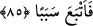
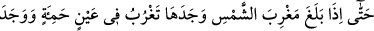
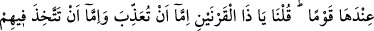
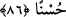

“Ona (muhtaç olduğu) her şey için bir sebep (bir vâsıta ve yol) verdik.” Biz ona,
güç ve kuvveti ile ilgili mülkü ve maksadları bakımından lâzım gelen şeylerden istediği
her şey için ona ulaştıracak bir yol verdik. Bu yol ise kişiyi hedefine götüren ilim,
kudret ve vâsıtadan her biridir.
85. O da bir yol tutup gitti.
“O da bir yol tutup gitti.” Yâni Batıya ulaşmak istedi ve kendisini oraya ulaştıran bir
sebebe tâbî oldu ve yola düşüp gitti.
el-İrşâd’da der ki: “Herhalde ilk defa batıya ulaşmak istemesi, güneşin hareketine
riâyet etmek içindir.”
et-Tibyân’da şöyle der: “Karanlıklar denizi”nde hayat suyunu aramak için güneşin
battığı tarafa yöneldi. Çünkü ona: “Hayat suyu oradadır. Kim ondan içerse kıyâmete
kadar ölmez.” denildi. İşte onu bulmak ümidiyle karanlıklar tarafına yürümüştür.”
et-Te’vîlâtü’n-Necmiyye’de şöyle der: “Sana soruyorlar...” âyetinde, soru soranın
cevapsız bırakılmayacağına işaret vardır. Çünkü kıssalarda kalbler için kuvvet, sebât ve
ibretler vardır.“ Gerçekten biz onu yeryüzünde iktidar ve kudret sahibi kıldık...”
âyetinde, Zülkarneyn’in hilâfetinin güç ve kudretine işaret vardır. Yâni, biz onu
hilâfetimizle yeryüzünde kudret sâhibi kıldık. Bu hilâfet ile ona asâleten bizim takdir
ettiğimiz şeylerden her birinin varlığı için sebep olan her şeyi verdik. Öyle ki eşyanın
aslını (aynları) değiştirmeye kadir oldu, dünya ona musahhar kılındı. Dilediğinde
yeryüzü ona dürülür, dilerse su üzerinde yürür, isterse havada uçar ve ateşe girerdi.
Böylece bizim için sema ve arzda asâleten takdir edilmeyen, yeryüzünde hilâfet ile ona
takdir olundu.”
Fakir (Bursevî) der ki: Urûc (yükseliş) halinde sülûkün tertibine/sırasına işaret
olmak üzere sefere önce batıdan başladı. Çünkü batı cisimlere, doğu ruhlara işarettir.
Dolayısıyla varlık âleminde cisimlere seyr ve ıttilâ tamam olmadıkça ruhlar âlemine
oradan da hakîkat âlemine urûc/yükselme mümkün olmaz.
86. Nihâyet güneşin battığı yere varınca, onu kara bir balçıkta batar buldu. Onun
yanında (orada) bir kavme rastladı. Bunun üzerine biz: Ey Zülkarneyn! Onlara ya